Variable importance
Done via Variable Dropout Plot.
Details in ingredients::feature_importance.
p2 <- gg_model_importance(m)
#> ℹ Using all variables in data.
#> ℹ Using 1 - AUCROC as loss function.
#> ℹ Using `base::identity` as sampler.
p2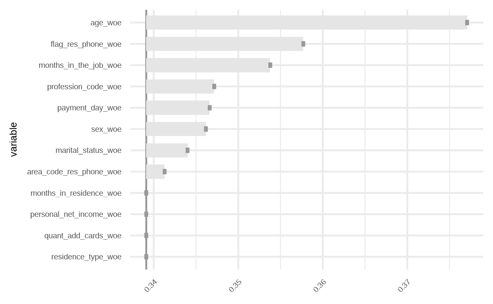
Other version bases on scorecads.
bins <- scorecard::woebin(credit, "bad", no_cores = 1)
#> ℹ Creating woe binning ...
#> Warning in check_const_cols(dt): There were 3 constant columns removed from input dataset,
#> flag_other_card, flag_mobile_phone, flag_contact_phone
#> ✔ Binning on 49694 rows and 14 columns in 00:00:07
gg_model_importance2(m, bins)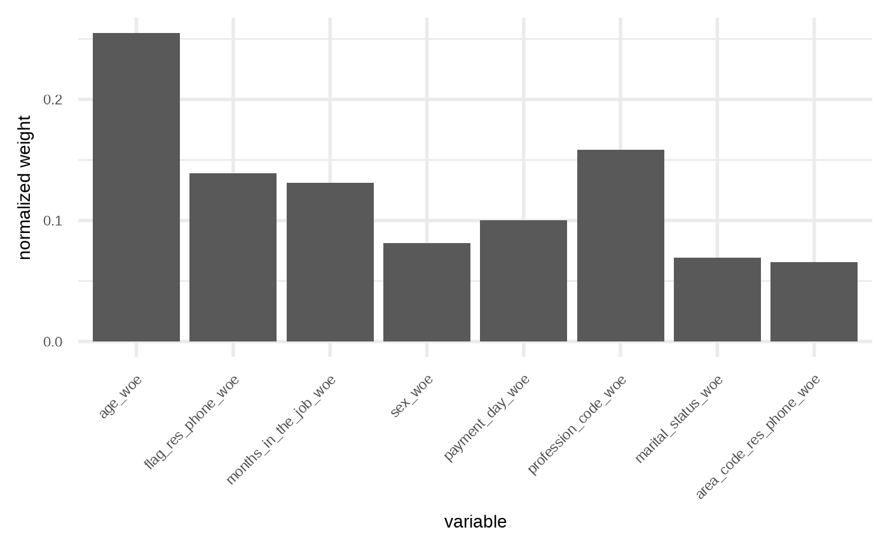
gg_model_importance2(m, bins, fill = "gray60", width = 0.5)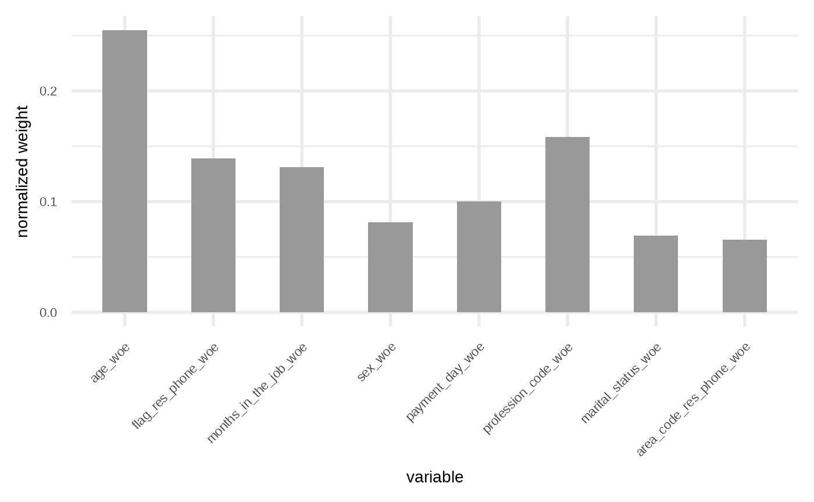
Correlations and VIF
p3 <- gg_model_corr(m)
#> Correlation computed with
#> • Method: 'pearson'
#> • Missing treated using: 'pairwise.complete.obs'
p3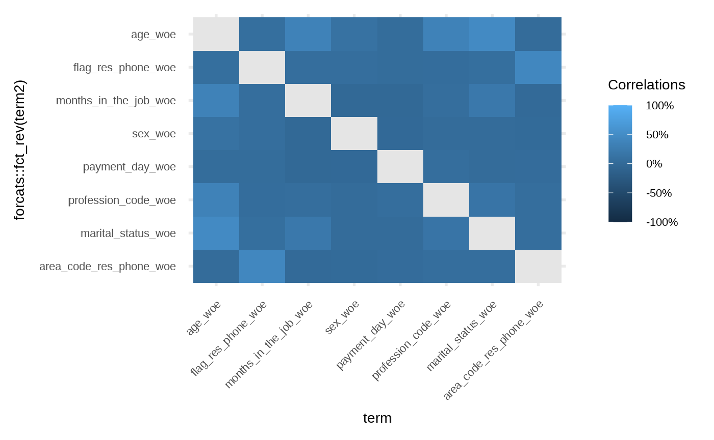
# override
p3 +
ggplot2::scale_fill_viridis_c(
name = "Cors",
label = scales::percent,
# limits = c(-1, 1),
na.value = "gray90",
# breaks = seq(-1, 1, by = 0.25)
)
#> Scale for fill is already present.
#> Adding another scale for fill, which will replace the existing scale.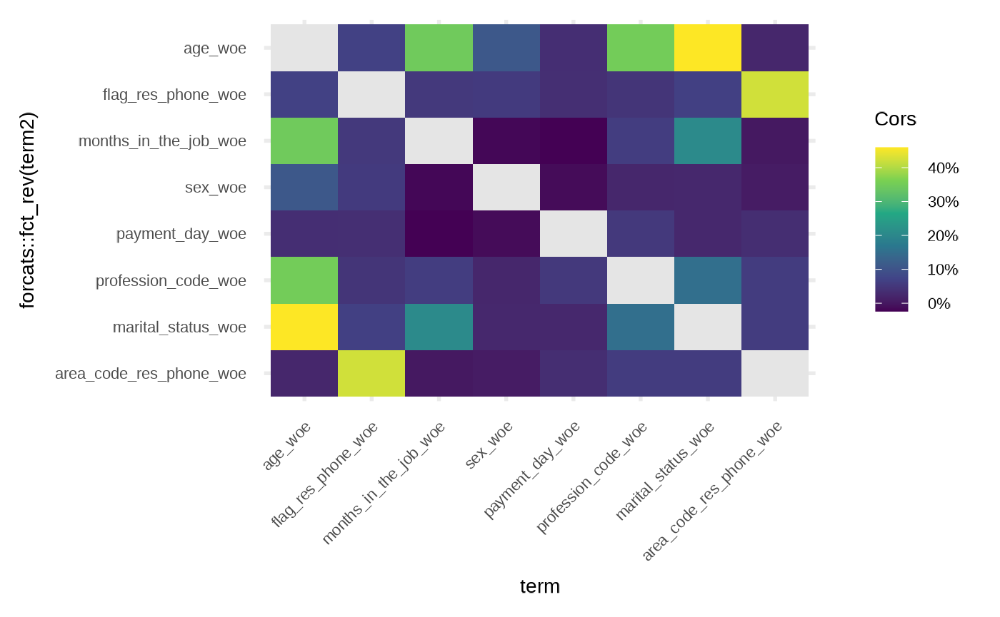
Vif plot is inspired by
see:::plot.see_check_collinearity.
p4 <- gg_model_vif(m)
p4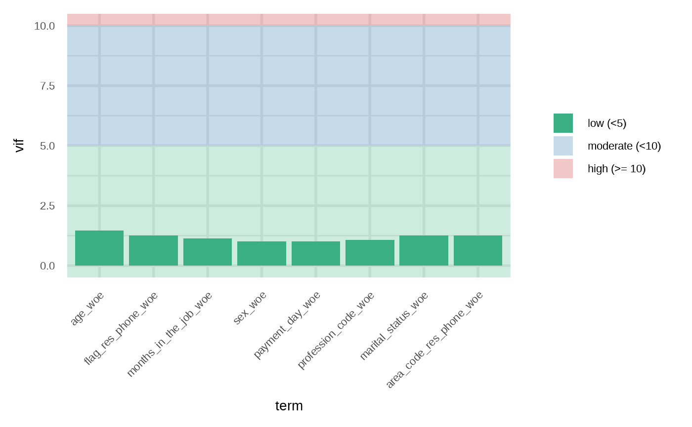
ROC
p5 <- gg_model_roc(m, newdata = dtest, size = 2) +
scale_color_viridis_d(begin = 0.2, end = 0.8, direction = -1, option = "B")
#> Warning: Using `size` aesthetic for lines was deprecated in ggplot2 3.4.0.
#> ℹ Please use `linewidth` instead.
#> ℹ The deprecated feature was likely used in the risk3r package.
#> Please report the issue at <https://github.com/jbkunst/risk3r/issues>.
#> This warning is displayed once per session.
#> Call `lifecycle::last_lifecycle_warnings()` to see where this warning was
#> generated.
p5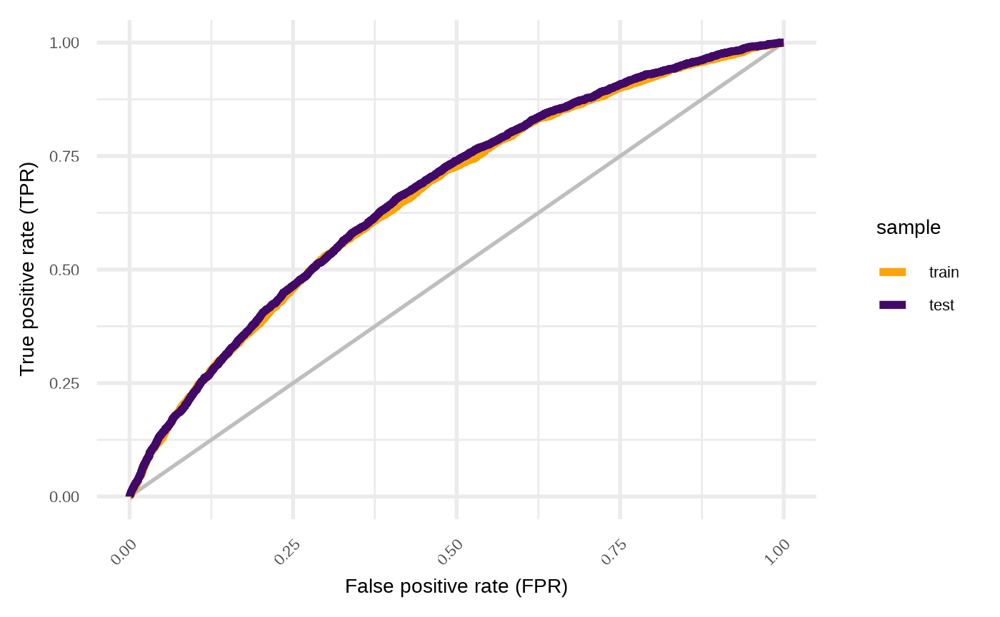
Empirical Cumulative Distribution Function
p6 <- gg_model_ecdf(m, newdata = dtest, size = 2) +
scale_color_viridis_d(begin = 0.2, end = 0.8, direction = -1, option = "B")
p6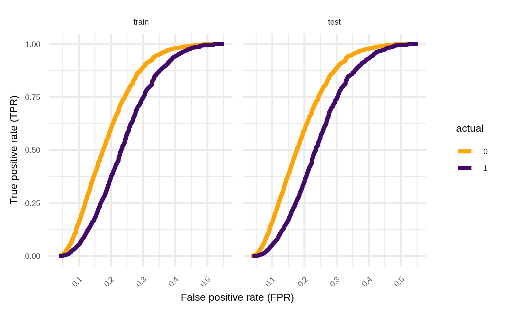
# just train
p6 <- p6 +
ggforce::facet_wrap_paginate(ggplot2::vars(.data$sample), nrow = 1, ncol = 1, page = 1) +
theme(strip.background = element_blank(), strip.text.x = element_blank())
p6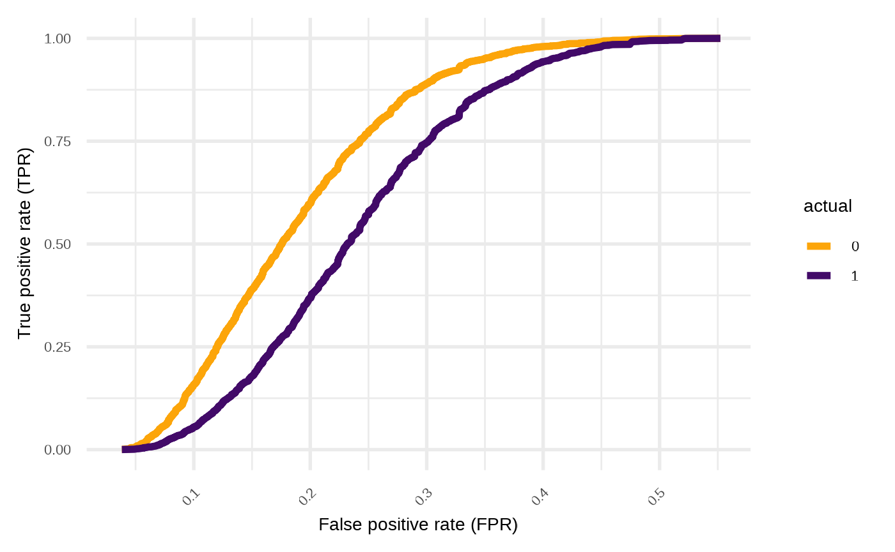
Distributions
p7 <- gg_model_dist(m, newdata = dtest, color = "transparent", alpha = 0.4)
p7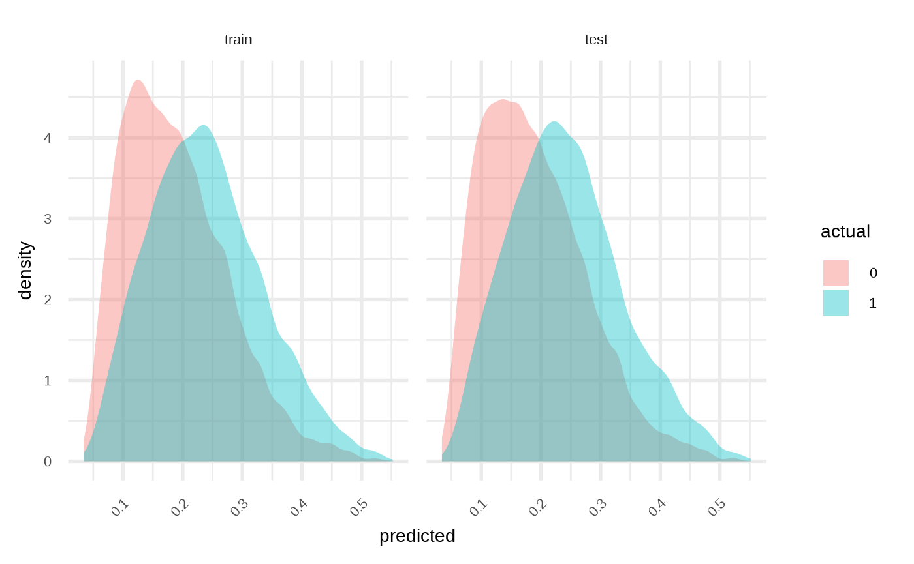
# Just train and separate distributions
p7 +
scale_fill_viridis_d(begin = 0.2, end = 0.8, direction = -1, option = "B") +
ggforce::facet_wrap_paginate(
ggplot2::vars(.data$sample, .data$actual),
nrow = 2, ncol = 1, page = 2
) +
theme(strip.background = element_blank(), strip.text.x = element_blank())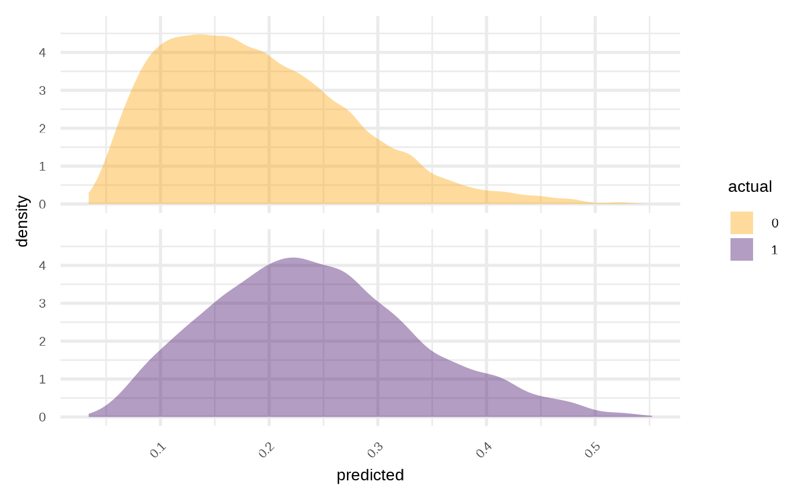
Calibration
p8 <- gg_model_calibration(m, newdata = dtest, alpha = 0.01, size = 1, color = "darkred")
p8
#> `geom_smooth()` using method = 'gam' and formula = 'y ~ s(x, bs = "cs")'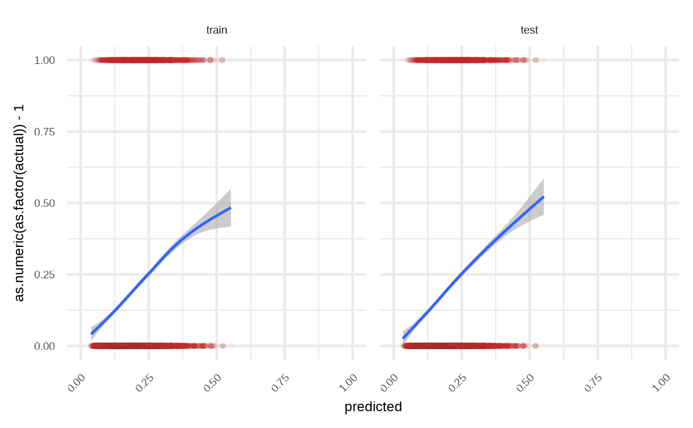
# only test and x = y
p8 +
ggforce::facet_wrap_paginate(
ggplot2::vars(.data$sample),
nrow = 1, ncol = 1, page = 2
) +
geom_abline(aes(slope = 1, intercept = 0), color = "gray70", size = 2) +
theme(strip.background = element_blank(), strip.text.x = element_blank())
#> `geom_smooth()` using method = 'gam' and formula = 'y ~ s(x, bs = "cs")'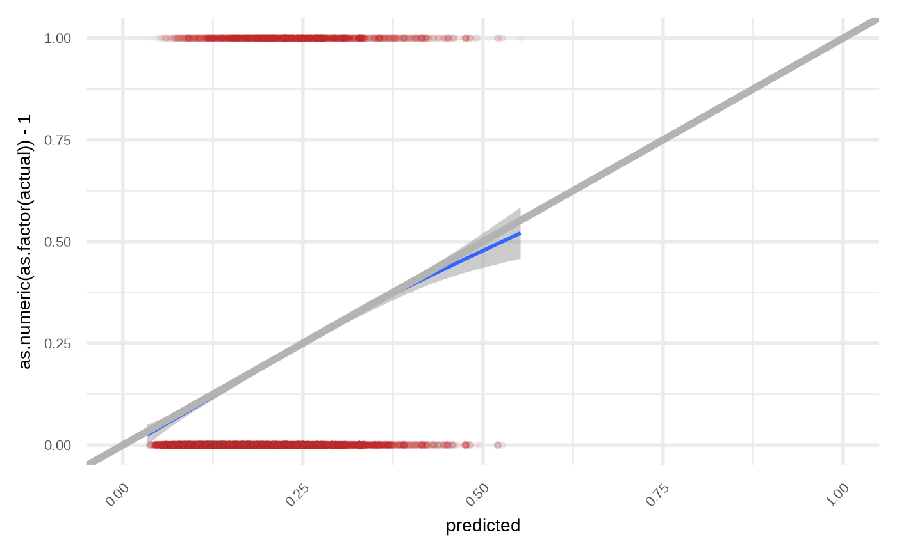
Compose and override some lables/colors
Using patchwork.
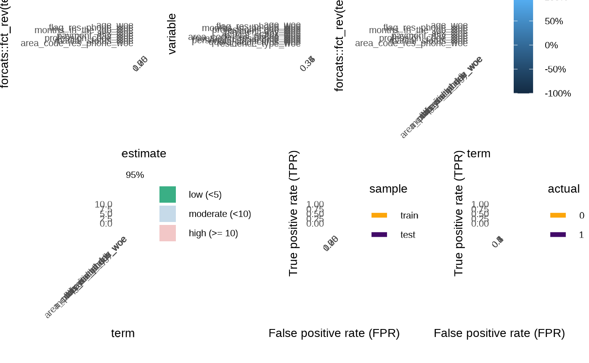
As we can see there some space we can gain
p12 <- p1 +
labs(caption = NULL, x = "Estimate")
p22 <- p2 +
scale_x_discrete(breaks = "", name = NULL, limits = rev) +
coord_flip()
#> Coordinate system already present.
#> ℹ Adding new coordinate system, which will replace the existing one.
p32 <- p3 +
scale_fill_viridis_c(
name = "Cors",
limits = c(-1, 1),
label = scales::percent,
na.value = "gray90",
breaks = seq(-1, 1, length.out = 5),
option = "B"
) +
geom_text(aes(label = round(cor * 100)), color = "white", size = 2.5) +
scale_x_discrete(breaks = "", name = NULL) +
scale_y_discrete(breaks = "", name = NULL) +
theme(legend.position = "right")
#> Scale for fill is already present.
#> Adding another scale for fill, which will replace the existing scale.
p42 <- p4 +
scale_x_discrete(limits = rev) +
coord_flip() +
theme(legend.position = "bottom") +
labs(x = NULL, y = "VIF")
p52 <- p5 +
scale_color_viridis_d(
name = "Sample",
begin = 0.2,
end = 0.8,
option = "A",
labels = stringr::str_to_title,
) +
theme(legend.position = "bottom")
#> Scale for colour is already present.
#> Adding another scale for colour, which will replace the existing scale.
p62 <- p6 +
scale_color_viridis_d(
name = NULL,
begin = 0.2,
end = 0.8,
option = "D",
labels = ~ ifelse(.x == "0", "Good", "Bad")
) +
labs(x = "Predicted") +
theme(legend.position = "bottom")
#> Scale for colour is already present.
#> Adding another scale for colour, which will replace the existing scale.
(p12 | p22 | p32) /
(p42 | p52 | p62)
#> Warning: Removed 8 rows containing missing values or values outside the scale range
#> (`geom_text()`).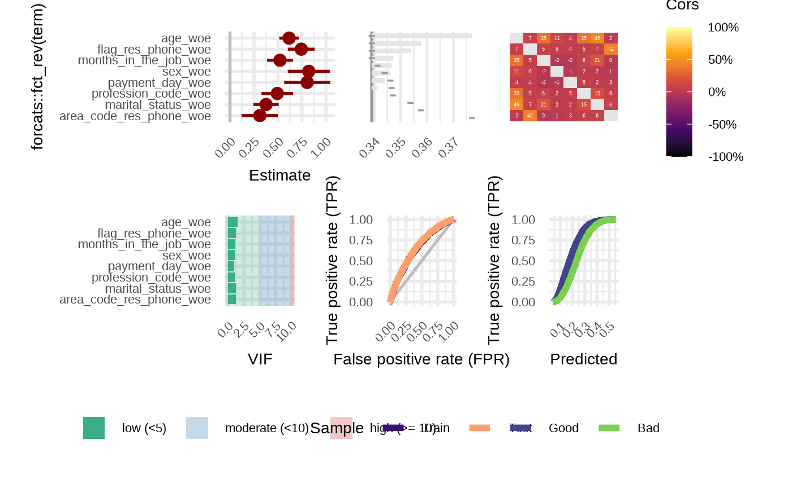